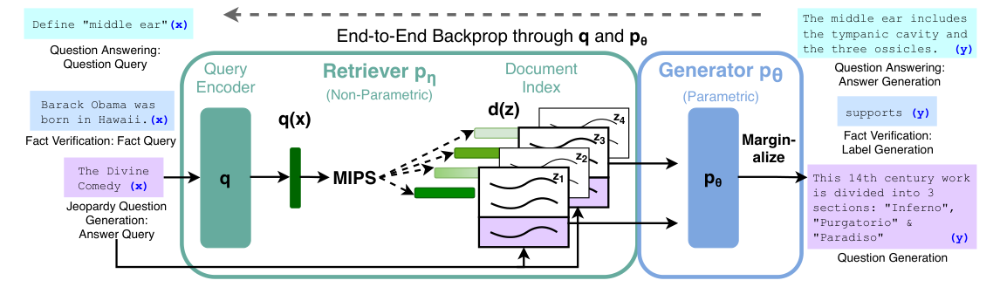
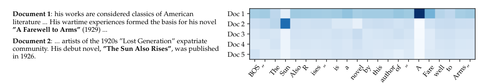
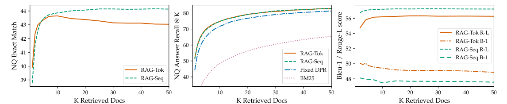

先查资料，再写答案
Lewis 等人 2020 年在 Facebook AI Research 写的《Retrieval-Augmented Generation for Knowledge-Intensive NLP Tasks》，简称 RAG。大模型把知识背进参数，世界变了就改不了，也说不出依据。这篇给一个预训练好的生成模型 BART 外挂一本「可查的书」：回答前，先从维基百科的向量索引里查出几段相关文字，再让生成器参考它们写答案；检索器和生成器只靠「问题-答案」一起训练，换一本书，模型的知识就跟着换。「检索增强生成」后来成了一个通用名词。
- 正文只走一条线：闭卷模型的毛病 → 外挂一本书（检索器）→ 照着写（生成器）→ 不知道哪篇对，加权平均 → 误差怎么传回检索器 → 每个结论对应哪个实验。只读每节标题和每段第一句，也能串起来。
- 公式、符号表、解码细节、概念解释、完整结果表、当时的背景，都在页尾的附录里，默认折叠，标明对应原文第几节。正文每一步末尾会指到附录里对应的式子。
- 小数字例子都验算过，为讲解设定的标「示意」。
- 零件在前面几篇讲过：检索器的两个编码器是 008 BERT，生成器 BART 是 004 Transformer 的编码器-解码器；「大模型把知识压进参数」见 007 GPT-2。
1要解决的问题：知识背在参数里，改不了、说不清、会编
到 2020 年，大模型靠预训练把知识压进了几亿到几百亿个参数里，闭卷问答很强。原文把这叫参数记忆：知识是隐式的，分散在权重里。它有三个先天毛病。
知识写死了：想让模型知道 2018 年的秘鲁总统，不是 2016 年的，只能继续训练。依据说不清：答案出来，没人知道它读的是哪篇。会编造：记不清的事，模型也写得很流畅。
反过来，「先检索，再抠答案」的路线能解决这三点，但此前只用于抽取式问答：答案必须是文档里的一段原话，不能自由生成。把检索和语言模型结合的 REALM 也只做抽取式，而且要昂贵的专门预训练。
直接的想法是「先检索，把文档塞给生成器」。这里有第二个毛病：
训练数据只有「问题-答案」，没有人标注「该查哪一段」。如果检索器是现成的、不动，检索错了生成器无从纠正；如果想训练它，就得让答案的对错能传回检索器。这正是后面三步要做到的：用现成的检索器和生成器，只靠问题和答案，把两者一起训练。
2第一步：外挂一本能查的书（检索器）
这本书是 2018 年 12 月的维基百科：每篇文章切成互不重叠的 100 词片段，共 2100 万段，每一段算一个「文档」。检索器要做的事，是给一个问题，从 2100 万段里挑出最相关的前 K 段。
做法是双塔：一个 BERT 把问题变成一个向量，另一个 BERT 把每段文字变成一个向量，两个向量的内积越大，说明越相关。文档向量可以提前算好存进索引，来一个问题，只需编码问题一次，再在索引里找内积最大的向量（最大内积搜索 MIPS，用近似索引，查询时间比库的大小增长得慢）。检索器直接拿训练好的 DPR 初始化，不从零训练。
内积经过 softmax 变成概率：每篇文档被「选中」的可能性。分数差被放大，所以前几名的概率很集中。这一步对着第一个毛病里的「改不了、说不清」：知识放在索引里，换得了，也知道取了哪几段。精确写法见附录 A 式 1。
3第二步：照着查到的段落写（生成器）
生成器是预训练好的 BART（4 亿参数的 Transformer 编码器-解码器）。做法简单到几乎没有新结构：把问题 x 和一段文档 z 直接拼起来，送进 BART，让它自回归地写出答案 y。它的参数本来就存着一部分知识，原文叫参数记忆；索引加检索器是非参数记忆。两种记忆配合，不是二选一。
因为生成器是通用的「文字进、文字出」，同一套结构能做开放域问答、写完整句子的问答、生成 Jeopardy 式的问题，也能做事实核查（把「支持、反驳、信息不足」当成一个词输出）。下面是原文给的整体图，前两步在中间，后两步（加权平均和训练）在下面两节。

这一步对着「抽取式只能抠原话」：答案不必逐字出现在文档里，线索散在几篇里也能综合。原文给了一个数：当正确答案不在任何一篇检索到的文档里时，RAG 在 Natural Questions 上仍答对 11.8%，抽取式模型是 0%。
4第三步：不知道哪篇对，就都参考，按概率加权
现在有 K 段文档，哪一段对没人知道。本文的办法：把「用哪篇文档」当作一个没被观察到的中间变量（隐变量），对前 K 篇都算一遍，再用检索器给的概率加权平均。这叫边缘化。直觉：去问 K 位专家，按你对每位的信任程度加权他们的把握。
加权有两种做法，区别在「乘」和「加」谁先谁后：
- RAG-Sequence：整个答案参考同一篇文档。先对每篇文档算出整句答案的概率，再按文档概率加权相加。
- RAG-Token：每个词可以参考不同的文档。每写一个词，先把 K 篇文档各自的预测加权混合，再把各词的概率连乘。
同样的数据，两种做法得到不同的数。Token 的好处在答案由两条分散的信息拼成时最明显：设两篇文档各占一半，第一个词只有文档 A 知道，第二个词只有文档 B 知道，Sequence 得 0.009，Token 得 0.207（示意，已验算，计算见附录 A）。原文用它解释为什么 Jeopardy 上 Token 更好、MS-MARCO 上 Sequence 更好，这是作者的假说，没有做专门的对照实验。
这一步对着第二个毛病：没有「该查哪篇」的标注也没关系，所有候选都参与，权重是连续的数，下一步误差就能顺着权重传回去。精确写法见附录 A 式 2、式 3。
5第四步：检索器怎么学会查：答案对不对，一路传回检索器
训练目标就是让标准答案的概率尽量大：对每对（问题，答案），最小化 −log p(y|x)，用 Adam（见 005 Adam）。p(y|x) 是上一步加权平均出来的数，里面带着检索器的概率，所以梯度能流进检索器。
流进去的是什么？我用 RAG-Sequence 推了一遍（原文没有写这个推导）：对第 j 篇文档的分数，梯度正好是「看到答案之后这篇文档的后验概率，减去看到答案之前检索器给它的先验概率」。
文档 z₁ 让生成器很容易写出标准答案，后验 0.824 高于先验 0.6，梯度为正，训练就把这个问题的向量往 z₁ 的向量方向推；写不出答案的文档被压低。检索器从来没被告知哪篇对，它是靠「哪篇让答案更容易写对」这个间接信号自己学会的。一个限制：前 K 篇之外的文档得不到梯度。
另一个让训练跑得动的设计：只训练问题一侧（查询编码器）和 BART，文档编码器和索引冻结。文档编码器一更新，2100 万个文档向量全部过期，要整库重新编码、重建索引，每个训练步都这样做不可能完成。问题向量是在线现算的，随便更新。
原文说没有发现更新文档编码器对强结果是必要的，没有给出原因。我的推测（不是原文说法）：DPR 的文档向量空间本来就有不错的语义结构，只调问题落在哪里，已足以改变每个问题查出哪些文档。一个衍生的好处：换一本新书，只需要用同一个文档编码器重新编码，这是第 6 节最后一个实验的基础。这一步对着第二个毛病里的「检索器怎么训练」。精确写法见附录 A 式 4；解码时两种模型怎么搜索，见附录 B。
6证据：它到底做到了多少
外挂一本书，比多背参数更划算
开放域问答的核心结果在 Natural Questions：闭卷的 T5-11B 是 34.5，抽取式的 REALM 和 DPR 是 40.4 和 41.5，RAG 是 44.1 和 44.5。RAG 不需要重排器，也不需要抽取式阅读器，也不需要 REALM 那样的专门预训练。
要读准的地方：不是每个格子都赢。TriviaQA 标准测试集上 RAG 是 55.2 和 56.8，低于 DPR 的 57.9；原文说的最优成绩只限于和 T5 可比的拆分（TQA-Wiki，RAG-Seq 68.0）。CuratedTrec 上 RAG-Token 的 50.0 也略低于 DPR 的 50.6。完整表见附录 E。
检索器跟着任务学，是关键
把检索器换成三种，其余不变：固定的 BM25（只看词有没有重合）、冻结的 DPR、继续训练查询编码器的 RAG。
开放域问答里，学出来的稠密检索是关键，CuratedTrec 上 BM25 只有 33.1，学出来的有 51.9。这是「端到端训练检索器有没有用」的直接证据，对着第 5 节。
写出来的东西更具体、更符合事实
同样的预训练 BART，加不加检索，是最干净的对比。MS-MARCO 上 RAG-Sequence 比 BART 高 2.6 个 BLEU 和 2.6 个 ROUGE-L（44.2 对 41.6，40.8 对 38.2）；Jeopardy 的 Q-BLEU-1 上，RAG-Token 22.2，BART 19.7。事实核查 FEVER 上，三分类 RAG 72.5，BART 64.0，二分类 89.5 对 81.1。RAG 没有用任何证据标注，三分类离最优流水线系统只差 4.3 个点，二分类差 2.7（那个系统用了金标准证据）。
自动指标测不出「是不是真的」，所以还要人评：
事实性上 RAG 更好的占 42.7%，BART 更好的占 7.1%。这是 452 对生成的结果，约五分之一没有形成多数意见，别把 42.7% 当成精确值。
另外，RAG-Token 写每个词时参考哪篇文档，原文 Figure 2 画了出来：

作者还观察到：书名第一个词写出来之后，后验就变平了。他们给纯 BART 喂前缀 "The Sun，它自己补出了完整书名。作者的假说是：检索到的文档只负责「点一下」，让参数里已有的记忆被唤醒。两种记忆是配合的，不是互相替代。
换一本书，知识就换了
这是「非参数记忆可更新」最直接的证据，对着第 1 节的「改不了」。我补充的：82 个样本上，70% 的误差约 5 个点，70 和 68 的差别不能读成「2016 更好」；非对角线为什么是 12% 和 4%，原文没解释。
检索多少篇
训练时 K 取 5 或 10 差别不显著；测试时可以调。

结论收在两句：外挂可更新、可追溯的知识库，比把知识全背进更多参数更划算（NQ 上 44.5 对 34.5）；检索器和生成器只靠「问题-答案」就能一起训练，不需要「该查哪篇」的标注。
7局限和后来
- 检索可能塌缩：在故事生成这类对事实知识需求不明确的任务里，检索器会学成不管输入是什么都返回同样的文档，RAG 退化成 BART（原文附录 H，作者的假说）。
- 知识源不完美：维基百科不保证事实正确，也有偏见；生成模型本身也有被滥用的风险。
- 没有从零联合预训练：两个部件都是现成的，联合预训练被留作未来工作。
- 幻觉只是减少，没有消失；原文没有测生成的内容是否忠实于查到的文档（我补充的）。
后来：「RAG」成了通用名词，但今天常说的 RAG 多半是「检索结果放进提示词」，生成器是不更新的大模型，检索器单独训练或用现成的嵌入模型。它保留了「外挂非参数记忆」这个核心，丢掉了「联合训练检索器」这个设计（我的观察，待核实）。本文微调 BART 的全部参数，代价不低，下一篇 014 LoRA 讲怎样便宜地微调大模型。更多见附录 G。
附录 · 想深入再看
下面每一块默认折叠，标明对应原文第几节。
A · 公式和符号表（原文第 2 节）
记号。x：输入；y：目标序列，共 N 个 token；z：一篇检索到的文档。pη(z|x)：检索器，参数 η，返回每篇文档的概率，只保留前 K 篇；pθ(yi | x, z, y1:i−1)：生成器，参数 θ。
分母是对所有文档的 exp(分数) 之和，即 softmax；实际只对前 K 篇近似。本文用的是内积，不是余弦相似度。
两式只差 Π 和 Σ 的位置。分类任务把类别当成长度 1 的序列，两式相同，所以 FEVER 只有一行 RAG。RAG-Token 里的权重 pη(z|x) 每一步都是同一个先验，不随已写的词变化。
分散信息的例子（示意，已验算）。两篇文档各 0.5。第一个词 p(y₁|A)=0.9，p(y₁|B)=0.01；第二个词 p(y₂|A)=0.01，p(y₂|B)=0.9。
sj 是第 j 篇文档的检索分数（内积），后验 p(zj|x,y) = pjaj / Σkpkak，ak = pθ(y|x,zk)。图 5 的验算：先验 (0.6, 0.3, 0.1)，a = (0.72, 0.30, 0.02)，Σp·a = 0.524，后验约 (0.824, 0.172, 0.004)，梯度 (+0.224, −0.128, −0.096)。
B · 解码：两种模型怎么搜索（原文 2.5 节、附录 A）
RAG-Token 本身是标准的自回归模型，每一步的下一个词分布是 K 篇文档预测的加权混合，直接用普通束搜索。
RAG-Sequence 不行：整句概率是对文档求和之后的数，不能拆成逐词连乘。做法是对每篇文档单独做一次束搜索，把所有候选合成集合 Y；要估计候选 y 的概率，需要它在每篇文档下的概率。有的 y 没出现在某篇文档的束里，那就再做一次前向计算，这叫 Thorough Decoding；更快的近似是直接认为没出现的 p(y|x,z)≈0，叫 Fast Decoding。
示意（K=2，已验算）：z₁（0.7）的束里有 A:0.5、B:0.2，z₂（0.3）的束里有 A:0.4、C:0.3。Fast：p(A)=0.7×0.5+0.3×0.4=0.47，p(B)=0.14，p(C)=0.09。Thorough：若 p(B|x,z₂)=0.25，则 p(B)=0.14+0.3×0.25=0.215。
作者实际用的：开放域问答，RAG-Token 用 15 篇，RAG-Sequence 用 50 篇加 Thorough Decoding，贪心解码（束搜索没有提升）；MS-MARCO 和 Jeopardy 用 10 篇、束宽 4，RAG-Sequence 用 Fast Decoding。训练时 K 取 5 或 10。
C · 几个概念：参数与非参数记忆、三种问答范式、BM25 与稠密检索、双塔、MIPS、BART、指标（原文第 1、3 节）
参数记忆与非参数记忆
| 参数记忆 | 非参数记忆 | |
|---|---|---|
| 类比 | 闭卷考试 | 开卷考试 |
| 存在哪 | 网络权重里，隐式、分散 | 外部文档库，原始文本 |
| 更新 | 要重训 | 换文档库 |
| 能否追溯 | 不能 | 能，知道取了哪几段 |
「知识密集型任务」原文的定义是：人类在没有外部知识来源时，不能合理地期望完成的任务。
开放域问答的三种范式
闭卷：不检索，直接生成（T5-11B）。开卷、抽取式：先检索，在文档里圈出一段原文当答案（DPR、ORQA、REALM）。开卷、生成式：先检索，再让生成器自己写（RAG）。开放域和 SQuAD 的区别：SQuAD 每题附一段文章，开放域要自己先找文章。
BM25、稠密检索、双塔与交叉编码器
BM25是稀疏检索：看词有没有重合，稀有词权重高，不需要训练，对人名地名友好，词不一样就认不出。稠密检索把查询和文档各变成一个向量，意思相近就靠近，能跨词汇匹配，对精确实体名有时不如 BM25（FEVER 的结果是例证）。双塔：查询和文档各过一个编码器，文档向量可提前算好；交叉编码器：查询和文档拼在一起过一个 BERT，更准，但每个查询要对每篇文档各跑一次，不能用于全库检索。DPR 的完整问答系统是「双塔粗筛，再用交叉编码器重排，再接抽取式阅读器」，RAG 的主张之一是后两者都不需要。DPR 用 BERT-base 做编码器，具体用哪个位置的输出，原文没说；DPR 论文用的是 [CLS]，这是按 DPR 论文的理解，不是本文原文内容。
MIPS、FAISS、HNSW
最大内积搜索：找内积最大的向量。朴素做法对 2100 万个向量各做一次内积，太慢。近似 MIPS 用预先建好的索引，搜索只看一小部分，换来亚线性时间。FAISS 是 Facebook 的向量检索库，HNSW 是一种多层近邻图索引：从顶层稀疏图开始，一层层向下逼近。索引放在 CPU 内存，约 100 GB，压缩后 36 GB；在 CPU 上做 MIPS 已经够快。一旦文档编码器的参数变了，所有向量作废，索引要重建，这是冻结它的原因。
BART
预训练好的 Transformer 编码器-解码器，4 亿参数（正文写 400M，附录 G 写 406M），预训练是去噪：把文本弄坏再还原。可以理解为编码器像 BERT 一样双向读，解码器像 GPT 一样自回归写（这是概括，原文只说它在多种生成任务上达到最好成绩、超过同等大小的 T5）。输入是文字、输出是文字，所以能统一处理多种任务。
任务与指标
NQ、TriviaQA、WebQuestions、CuratedTrec：开放域问答，指标是精确匹配（EM，归一化后一字不差才算对）。后两个数据集小，用 NQ 训练好的 RAG 初始化。MS-MARCO NLG：问题到一句完整的答案，ROUGE-L 和 BLEU-1；本文不用它自带的金标准段落。Jeopardy 问题生成：给答案实体，生成一条陈述式的问题，本文新提出的任务，BLEU-1、Q-BLEU-1（对实体匹配给更高权重）和人评。FEVER：给一条断言，判断被维基百科支持、反驳还是信息不足；标签映射成单个词，不使用证据标注监督。人评：事实性是能否被可信的外部来源证实，具体性是输入和输出高度相互依赖；每次看一个答案和两条生成的问题，四选一。distinct 三元组比例：不重复的三元组数除以三元组总数，越高越不重复。
隐变量与边缘化，补一点
全概率公式：p(y|x) = Σz p(z|x)·p(y|x,z)。理论上对 2100 万篇求和，实际只取前 K 篇。原文没有明说前 K 篇的概率是否重新归一化；图 3、图 4 的例子按「归一化到和为 1」处理，这是我的假设。
D · 训练设置和参数量（原文第 3 节、附录 C、D、F、G、H）
| 项 | 内容 |
|---|---|
| 资料库 | 2018 年 12 月维基百科，100 词互不重叠片段，2100 万段 |
| 索引 | FAISS + HNSW 近似，放 CPU，约 100 GB，压缩后 36 GB |
| 硬件、框架 | Fairseq，混合精度，8 张 32GB V100（也可单卡）；后移植到 HuggingFace Transformers |
| 优化器 | Adam |
| 可训练参数 | 查询编码器 BERT-base 110M + BART-large 406M；文档编码器 110M 不训练 |
| 训练时 K | 5 或 10，差异不显著 |
| 微调数据 | 各任务自带的输入-输出对，没有检索标注 |
参数量的核对。原文附录 G 说总共 6.26 亿可训练参数（110M+110M+406M），但同一段说文档编码器不由他们训练，实际被训练的应是 110M+406M=516M。这是我的算术核对。无论哪个数，都比 T5-11B 小一个数量级以上；最接近的 T5-large（7.7 亿参数）在 NQ 上只有 28.9。索引本身不计入可训练参数，但占大量存储，所以「参数少」不等于「总资源少」。
数据集处理（附录 D）。NQ 和 WebQuestions 有多个标准答案，每个（问题，答案）对各作一条训练样本。TriviaQA 过滤掉不出现在该问题前 1000 篇检索文档中的答案候选。CuratedTrec 的答案是正则表达式，作者对每个问题检索前 1000 篇，选最常匹配该正则的答案作监督目标。TriviaQA 有两个测试集，RAG 在 TQA-Wiki 上更高，作者认为是因为这个测试集的问题更容易由维基百科回答，不同论文用不同测试集，不能混着比。
没有生效的尝试。空文档机制（仿照 REALM，让模型表示「检索到的都没用」）试了三种建模方式都没有提升，删掉了；在 MS-MARCO 上不太受益于检索的问题，模型学会了总是检索同一批文档（附录 F）。检索塌缩见第 7 节（附录 H）。
E · 完整的结果表（原文 Table 1、2、5、6）
Table 1 · 开放域问答测试集，EM
| 模型 | 类型 | NQ | TQA（标准 / TQA-Wiki） | WQ | CT |
|---|---|---|---|---|---|
| T5-11B | 闭卷 | 34.5 | - / 50.1 | 37.4 | - |
| T5-11B + SSM | 闭卷 | 36.6 | - / 60.5 | 44.7 | - |
| REALM | 开卷、抽取 | 40.4 | - / - | 40.7 | 46.8 |
| DPR | 开卷、抽取 | 41.5 | 57.9 / - | 41.1 | 50.6 |
| RAG-Token | 开卷、生成 | 44.1 | 55.2 / 66.1 | 45.5 | 50.0 |
| RAG-Seq. | 开卷、生成 | 44.5 | 56.8 / 68.0 | 45.2 | 52.2 |
Table 2 · 生成与分类测试集
| 模型 | Jeopardy B-1 | Jeopardy QB-1 | MS-MARCO R-L | MS-MARCO B-1 | FEVER-3 | FEVER-2 |
|---|---|---|---|---|---|---|
| SotA | - | - | 49.8* | 49.9* | 76.8 | 92.2* |
| BART | 15.1 | 19.7 | 38.2 | 41.6 | 64.0 | 81.1 |
| RAG-Tok. | 17.3 | 22.2 | 40.1 | 41.5 | 72.5 | 89.5 |
| RAG-Seq. | 14.7 | 21.4 | 40.8 | 44.2 |
* 表示该系统使用了金标准上下文或证据。FEVER 是分类，两种 RAG 等价，所以只有一行。
Table 5 · 生成多样性（distinct 三元组比例）
| MS-MARCO | Jeopardy | |
|---|---|---|
| 金标准（人写） | 89.6% | 90.0% |
| BART | 70.7% | 32.4% |
| RAG-Token | 77.8% | 46.8% |
| RAG-Seq. | 83.5% | 53.8% |
没有使用任何促进多样性的解码技巧；离人类水平仍有明显差距，所以不能说 RAG 解决了重复。
Table 6 · 检索消融，开发集
| 模型 | NQ | TQA | WQ | CT | Jeopardy B-1 | Jeopardy QB-1 | MS-MARCO R-L | MS-MARCO B-1 | FVR-3 | FVR-2 |
|---|---|---|---|---|---|---|---|---|---|---|
| RAG-Token-BM25 | 29.7 | 41.5 | 32.1 | 33.1 | 17.5 | 22.3 | 55.5 | 48.4 | 75.1 | 91.6 |
| RAG-Seq-BM25 | 31.8 | 44.1 | 36.6 | 33.8 | 11.1 | 19.5 | 56.5 | 46.9 | ||
| RAG-Token-Frozen | 37.8 | 50.1 | 37.1 | 51.1 | 16.7 | 21.7 | 55.9 | 49.4 | 72.9 | 89.4 |
| RAG-Seq-Frozen | 41.2 | 52.1 | 41.8 | 52.6 | 11.8 | 19.6 | 56.7 | 47.3 | ||
| RAG-Token | 43.5 | 54.8 | 46.5 | 51.9 | 17.9 | 22.6 | 56.2 | 49.4 | 74.5 | 90.6 |
| RAG-Seq | 44.0 | 55.8 | 44.9 | 53.4 | 15.3 | 21.5 | 57.2 | 47.5 |
这是开发集成绩，和 Table 1 的测试集不能直接比（例如 NQ：Table 6 的 RAG-Token 43.5，Table 1 是 44.1）。WQ 上 Token 优于 Seq、CT 上 Seq 优于 Token，数据集小，差异可能是噪音，不要过度解读。
FEVER 检索质量的侧面验证（4.4 节）
取 RAG 检索到的前 k 篇，看文章标题是否和 FEVER 金标准证据对上：第一名文档来自金标准文章的占 71%，前 10 名里含金标准文章的占 90%。检索器没被教过 FEVER 的证据，却能找对。
F · 当时的背景（原文第 1、5 节）
- 规模路线正盛：T5-11B 的闭卷问答展示了「只靠参数就能答一部分开放域问题」。RAG 与这条路线同时间并行：一边把模型做大，一边让模型会查。
- 检索进入神经时代：DPR 用 BERT 双塔取代 BM25 作问答检索器；ORQA、REALM 把检索器放进预训练，REALM 在预训练期间周期性刷新索引。RAG 和它们是同一波工作，区别是生成式而非抽取式，且不做专门预训练。
- 通用生成模型成熟：BART、T5 推出，第一次有了「一个模型接所有文本到文本任务」的生成器。
- 相关路线：记忆网络；检索再编辑（retrieve-and-edit），原文说 RAG 更强调整合多段检索内容，不是轻编辑一条检索结果。
G · 后来的发展和前后篇衔接（原文之外，多数待核实）
- 后来的 RAG：多是生成器不更新的大模型，加向量数据库和现成的嵌入模型，检索结果放进提示词；保留外挂非参数记忆，丢掉联合训练检索器。具体比例待核实。
- 同期与后续方向：Fusion-in-Decoder、联合预训练检索器和语言模型的 Atlas、预训练阶段就接入检索的 RETRO。细节我没有核对。
- 稠密对关键词：FEVER 上 BM25 反而更好，后来很多系统用「稠密加关键词混合检索，再重排」，与此一致（待核实）。
- 继承自：008 BERT（检索器编码器，预训练加微调）；004 Transformer（BART）；002 Seq2Seq（逐词概率分解与束搜索）；001 NPLM（softmax、对数似然）；005 Adam；007 GPT-2 的「把知识压进参数」是本篇的对立面。
- 留下的问题：微调 BART 全部 4 亿参数代价高，014 LoRA 讲便宜地微调；幻觉、有用性、遵循指令不只是知识来源问题，还涉及输出是否符合人的偏好，见 015 人类偏好、016 PPO、017 对齐、018 InstructGPT；大模型能装多少知识由规模定律决定，见 009 规模定律、011 GPT-3。本篇提供的是另一个方向：不必只靠变大。
H · 疑点和没有核实的地方
- 索引维度和数值总数：原文附录 G 写 728 维、153 亿个数值，前后自洽（2100 万×728）；但 BERT-base 的向量是 768 维，按 768 算约 161 亿个。疑似原文笔误，待核实。
- 参数量：626M 把不训练的文档编码器也算进去了，实际训练的应是约 516M。
- Table 4 的合计：「具体性」一列五个数相加是 93.0%；4.3 节正文写「两者都事实正确的占 17%」，而表里是「都好 11.7%、都差 17.7%」，疑似正文把 both poor 当成了 both good。待核实。
- 人评：原文没交代每条样本有几位评估者；无多数意见占约 20%。
- Table 6 的 MS-MARCO ROUGE-L 在 55 到 57，Table 2 测试集是 38 到 41：原文没有解释，应是开发集与测试集不同，我没有核实。
- 「SOTA」的口径：摘要说三个开放域问答任务刷新最好成绩，4.1 节说四个任务都是，但 TriviaQA 仅限 T5 可比拆分。
- 换索引实验：12% 与 4% 为什么不对称，原文没解释。
- 为什么冻结文档编码器不伤效果、Token 为什么在 K 太大后下降：原文没有给机制，正文里的说法是我的推测。
- 会议信息：NeurIPS 2020 是通行说法，PDF 只标 arXiv v4，待核实。